Santi.
Superfood Skincare, Wordmark
See the Santi brand workSanti is a superfood skincare brand. The logo needed to communicate water, freshness and hydration without being a literal droplet, wave or generic blue shape.
The answer was a single wave element woven into the wordmark. Getting it right took eleven stages. The wave changed weight, position and relationship to the letters at almost every step before landing somewhere that felt like it had always been there. That quality, where a design detail looks obvious in hindsight, is usually the sign that it took real work to find.
The rounded geometric sans was chosen for two reasons. Rounded terminals on letterforms feel soft and approachable, which is the right emotional register for a skincare product. And rounded type has a cleanness that works at very small sizes on packaging labels. Type with sharp terminals tends to look harder and colder, which would have worked against the brand.
The full stop after Santi is part of the mark, not punctuation. Ending a brand name with a full stop is a way of stating it with confidence, like a declaration. It also adds a graphic element to the end of the word that balances the circular letterforms, particularly the S on the left. That kind of subtle balance on the left-right axis of a wordmark is something people feel without knowing why.
Water imagery in skincare communicates hydration and freshness at a subconscious level. The challenge was finding a way to include that reference without it looking decorative or generic. The wave had to feel like it belonged to the word, not like it was added to the word. That distinction is the difference between a mark that has coherence and one that has elements.
Finding where the wave belonged
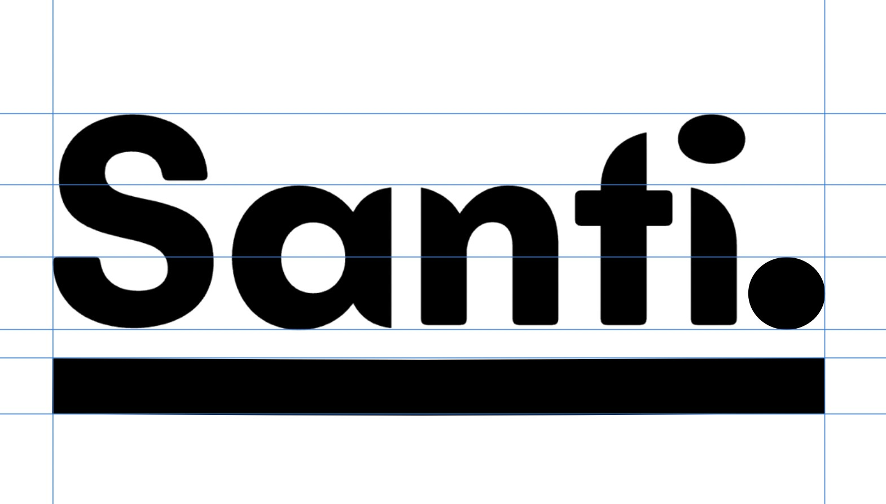
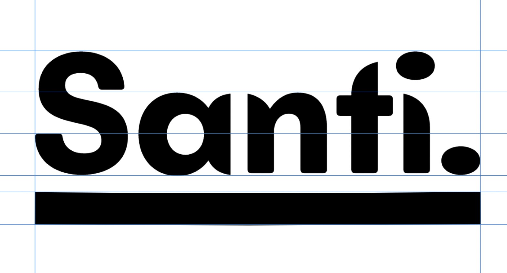
Starting with a heavy wordmark and a flat underline
The first idea is straightforward: a very heavy rounded wordmark above a thick straight rule. The weight is deliberate, heavy type has shelf presence and works well on product packaging where the logo competes for attention at small sizes. The thick rule anchors the name and creates a strong horizontal base.
What this version is missing is any connection to water or the brand's skincare identity. The flat rule reads as an underline, which is generic. But as a starting point it establishes the proportions, the weight and the structure that the rest of the process will work from.
The second shot refines the full stop, making it rounder and more proportional to the rounded letterforms. A full stop that is too small looks like punctuation. One sized correctly to the word weight looks like part of the design. This was adjusted at this stage so it was confirmed before the wave explorations began.
Stages 1 and 2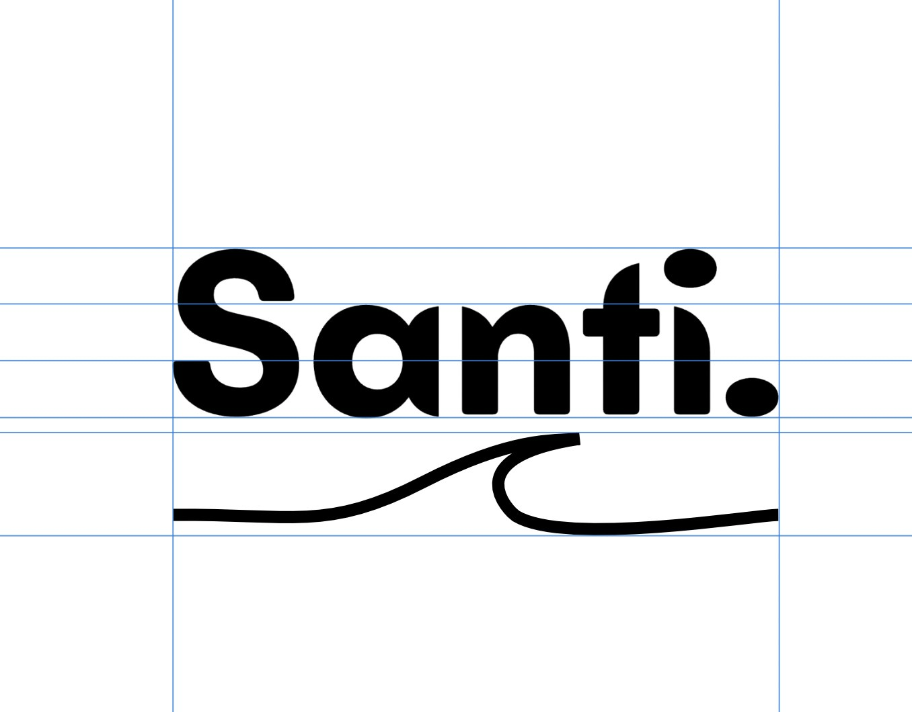
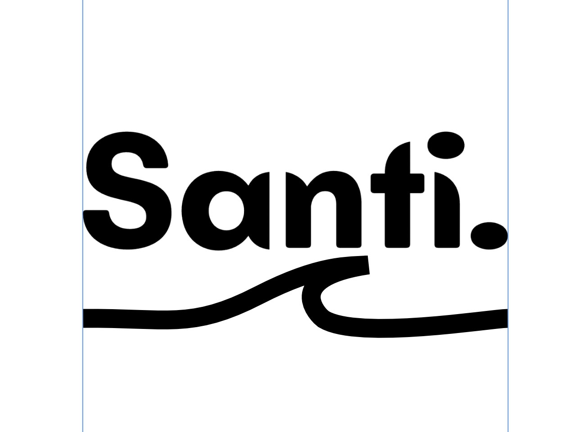
The first appearance of the wave and why the weight was wrong
A wave line is introduced beneath the wordmark. At this stage it sits below the flat rule, which means there are now two underline elements, the rule and the wave, competing in the same space. The wave is thin relative to the heavy wordmark above, which makes it look like a decorative afterthought rather than a design decision.
The thicker version improves the visual weight relationship but creates a different problem: the wave is now too heavy, and a heavy wave below a heavy wordmark makes the whole mark feel bottom-loaded. The visual weight needs to sit at the centre of the composition, not the base.
Both versions confirmed that below-the-word was not the right position for the wave, which redirected the exploration.
Stages 3 and 4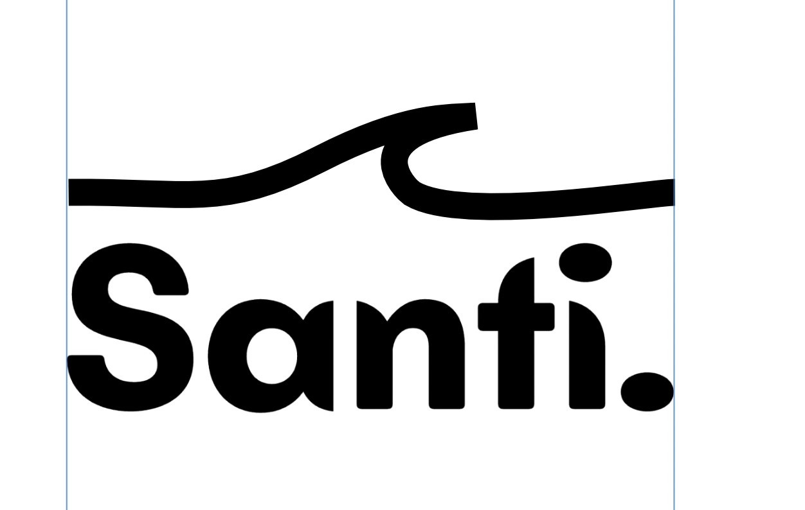
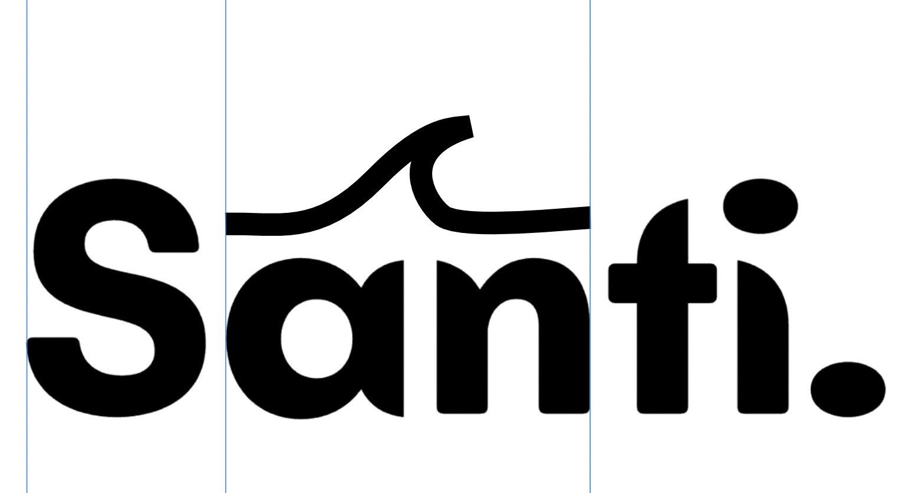
Moving the wave above the word and then into the interior of it
The wave moves above the entire word. A wave above text reads like something cresting or rising, which works for the water reference, but spanning the full width of the word creates a shape that looks disconnected. The wave is up there and the letters are down here, and they feel like two separate elements rather than one unified mark.
The second shot is a more interesting move: the wave is repositioned to sit above just the central letters "an", tucking into the interior of the word. This is the first moment where the wave starts to feel like it belongs inside the letterform space rather than floating above or below it. The concept of the wave emerging from within the word rather than being applied to it starts to become visible here.
Stages 5 and 6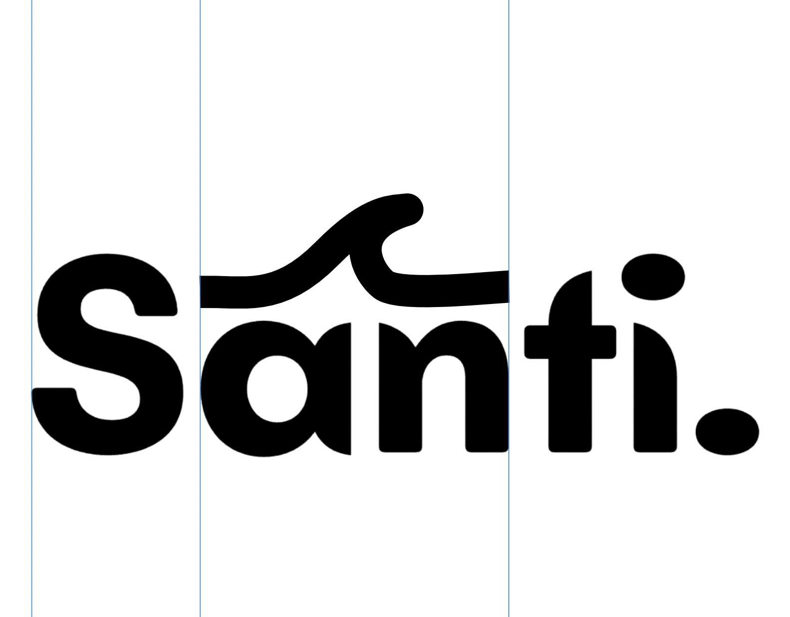
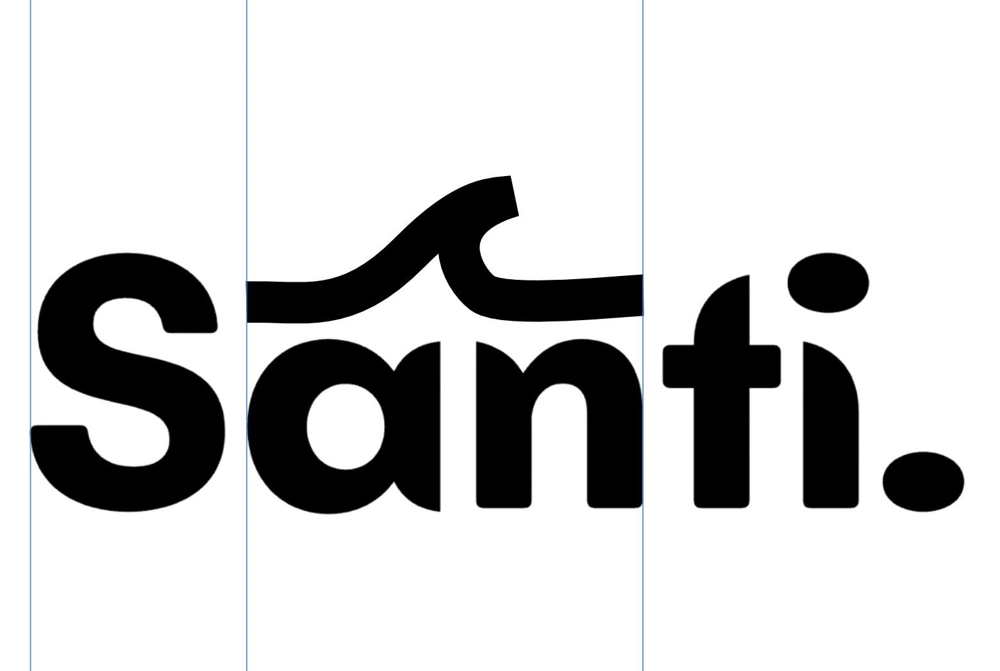
Testing weight and peak shape in the integrated position
With the wave sitting inside the letterform space, two things needed testing: how heavy it should be, and what shape the peak should take. A thicker wave has more visual authority and holds its own next to the bold rounded letters, but if it is too heavy it starts to look like a structural part of the letterform rather than a graphic element sitting within it.
The flat-tipped peak was a specific experiment. A pointed wave peak reads as dynamic and energetic. A flat peak is more contained and geometric. For a skincare brand where calm is part of the identity, the flat tip was worth trying. It turned out to feel too static, more like a bump than a wave, which confirmed that the curved peak was right and the shape needed to keep its natural wave character.
Stages 7 and 8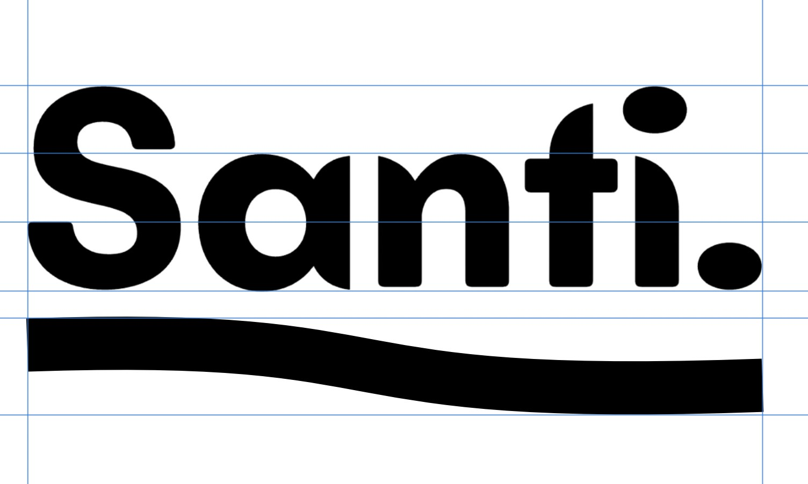
Returning to the underline with the wave incorporated into it
This stage steps back from the integrated position and tries a compromise: an underline that has a gentle wave worked into it. Rather than a flat straight rule, the line curves slightly, hinting at a wave without fully committing to one. It is a softer, more restrained version of the idea.
The problem is that this version does not say anything clearly. It is neither a confident underline nor a confident wave, so it reads as indecisive. In logo design, ambiguous graphic elements tend to weaken rather than strengthen a mark, because they do not give the viewer anything to hold onto. This comparison confirmed that the wave needed to be a fully-formed gesture rather than a hint.
Stage 9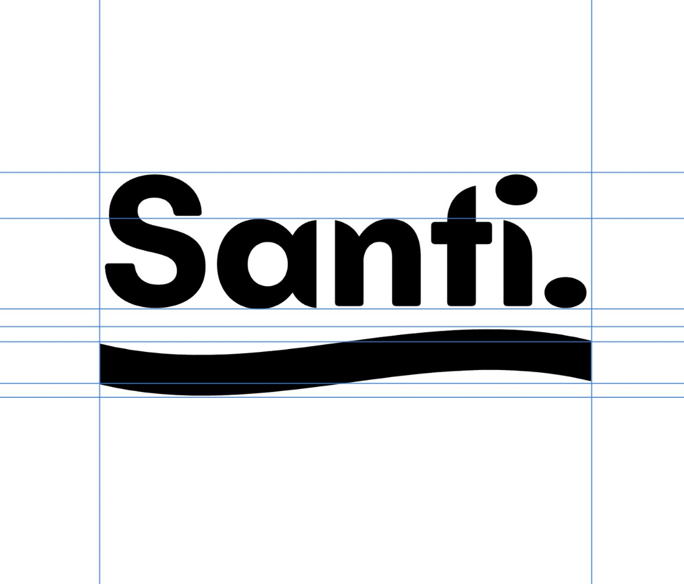
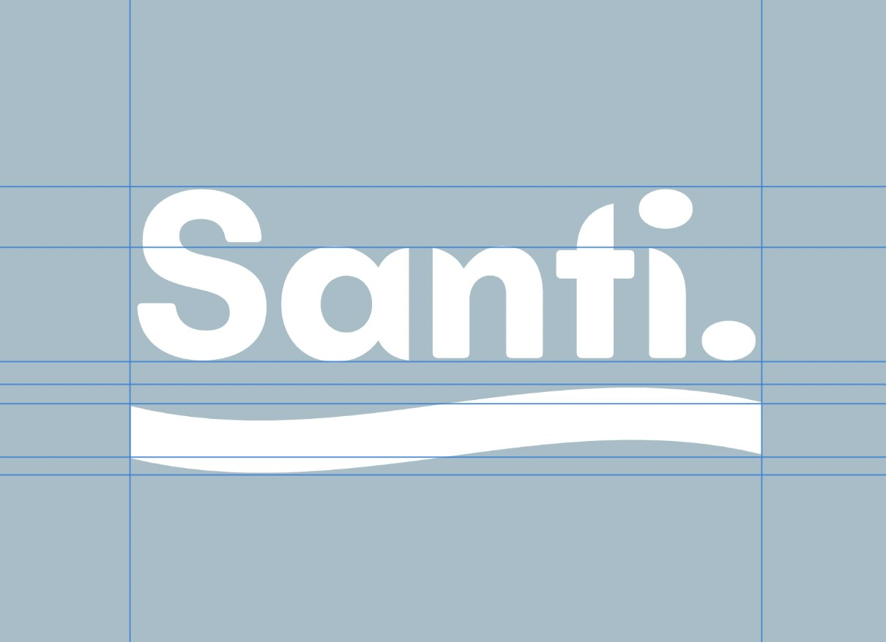
The wave finds its home and the mark is tested on the brand colour
The final version brings the wave back into the interior of the letterforms, at the right height and with the right weight. It sits between the letters rather than above them, which means it reads as part of the word rather than an element placed on the word. This is the distinction that matters: the wave feels like it grew from the letterform space, not like it was applied to it afterwards.
The test for whether an integrated design detail is working is whether you stop seeing it as a separate thing and just read the word. That is what happens with this version. You read Santi, and then you notice the wave is in there. That order is important, the name lands first.
The final shot applies the mark to the brand sky blue background in white. Blue is associated with water, cleanliness and calm across most cultures, all directly relevant to a skincare brand. White on the mid-toned blue creates a soft contrast that feels clean without being clinical. The mark holds perfectly in this context, which is the final confirmation it needed.
Stages 10 and 11
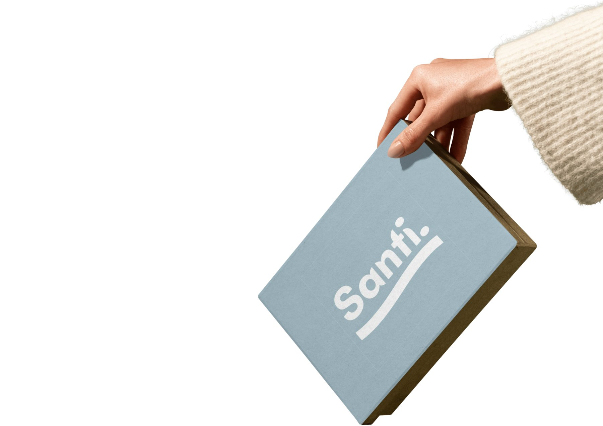